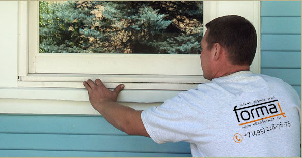
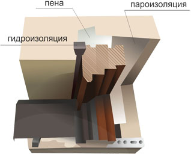

Компания Окна Формат предлагает своим клиентам полный комплект услуг по производству, доставке и монтажу заказанных деревянных окон. Только профессионал способен осуществить установку в соответствии со всеми технологическими нормативами и правилами, от соблюдения которых напрямую зависит не только бесперебойная эксплуатация вашего будущего окна, но и шумо-, пыле-, тепло- и влагоизоляция помещения.
Правила установки окон в проемы, выполненные из кирпича, бетона и дерева имеют существенные различия, обусловленные усадкой деревянных домов, длящейся в течение нескольких лет. Поэтому, при установке окон в деревянные проемы используются специальные бруски для скольжения, так называемые «обсады», которые защищают установленные окна от влияния энергично усаживающихся деревянных стен.
Для снижения нагрузки на фурнитуру, исключения поломок и облегчения эксплуатации установка окна должна быть выполнена строго по уровню в двух плоскостях, а для того, чтобы атмосферные осадки проникая в мелкие трещинки не вызывали образования конденсата и грибка на откосах, при монтаже уделяется особенное внимание грамотной герметизации монтажных швов. Согласно ГОСТ 309171-2002 монтажный шов должен содержать в себе три слоя, несущих различную функциональную нагрузку: внутренний, пароизоляционный слой, наружный, имеющий водоизоляцию и паропроницаемость и центральный, несущий функцию теплоизоляции.

Такое устройство монтажных швов позволяет исключить образование конденсата, возникающего из-за плохого вывода влаги из теплоизоляционного слоя.
Специалисты-монтажники нашей компании используют только материалы, фурнитуру и крепеж высочайшего качества, что позволяет осуществить профессиональный монтаж и гарантировать долголетнюю бесперебойную эксплуатацию конструкции.